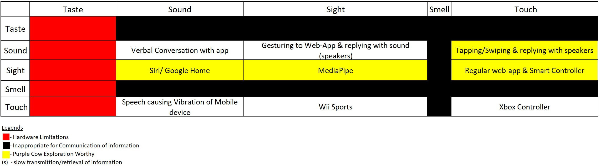
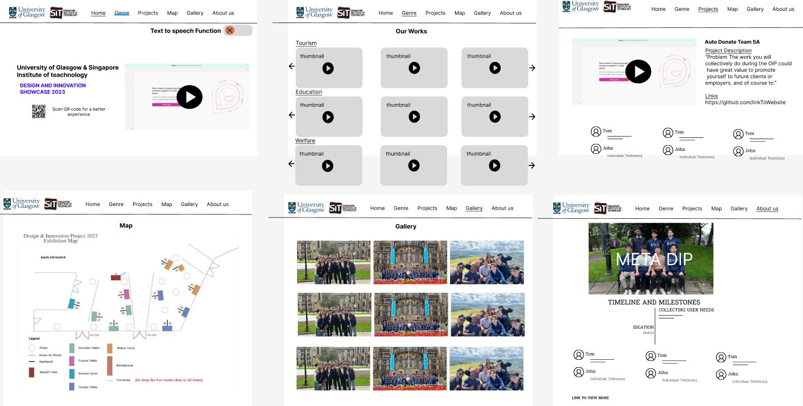
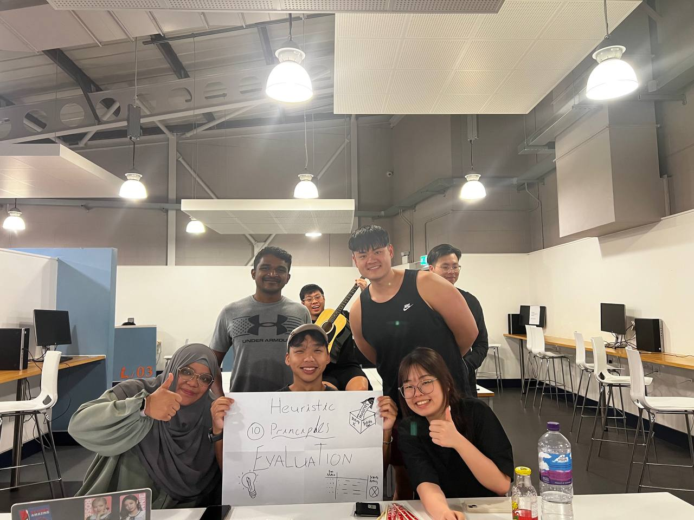
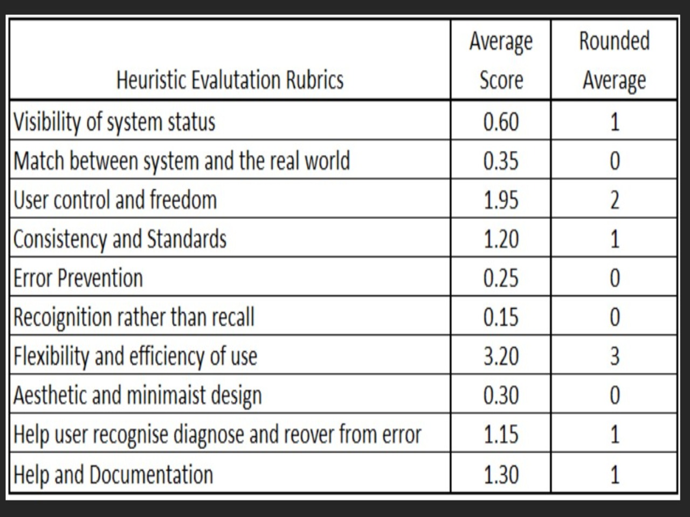
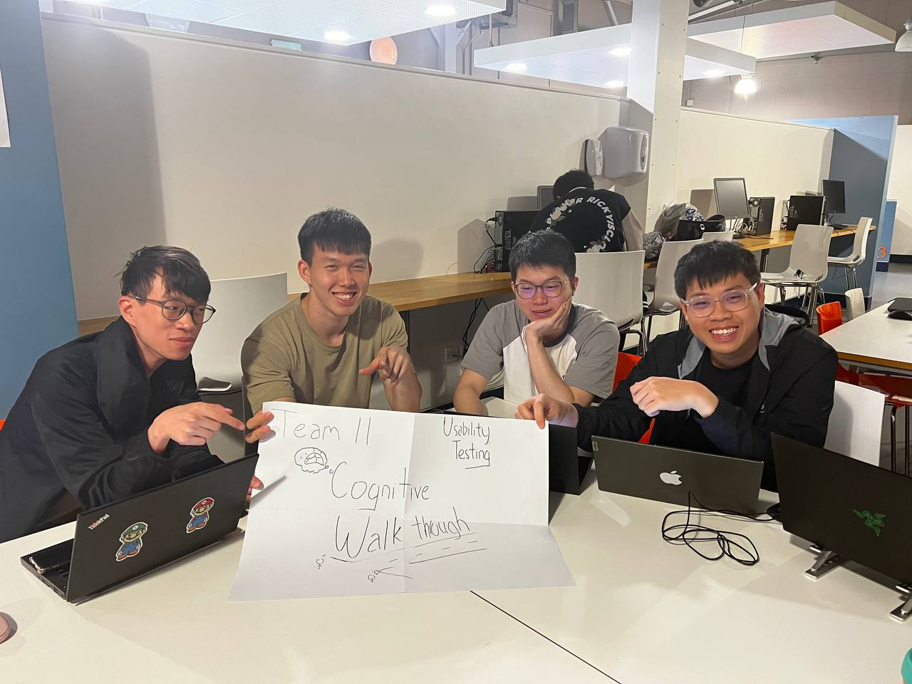
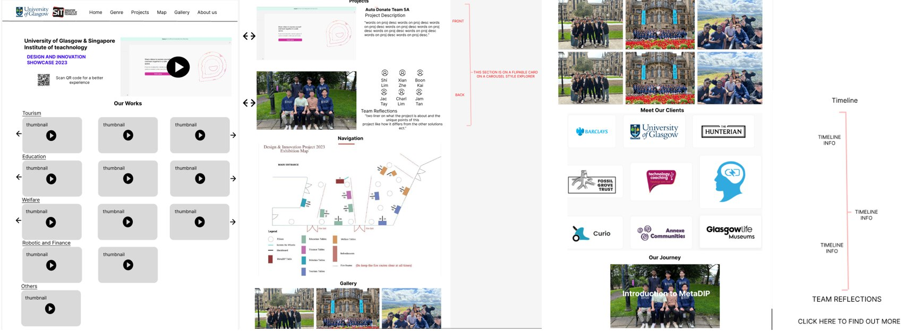

Exploration of Purple Cow

To accomplish this, the team started with the 5 senses which are the basis of all communications and interactions. After this, the team decided on the senses mixes which will limit the team based on hardware as well as the combination of senses which are not suitable for communication as shown. Concerns for hardware constraints, time limitations, and rate of content transfer was taken into account as well.
The team narrowed the senses that are suitable for communication and fit our use case as the following category:
Product receives touch and transmit sound
After rapid ideation of this category, the team decided on text to speech function being the most suitable form of communication. This function would allow users which are visibly impaired to listen to the contents of the web-application.
Product receive sound and outputs sight
There are many products that fit this category, such as Google Home Assistant and iPhone’s Siri. Due to this, the team has collectively decided to not grow in this direction due to large prominent corporation’s variations that discredits as a purple cow product.
Product receives sight and transmit sight
The products that are in the current market in this category are xBox Kinect, Wii and image filters. This was an interesting category for the team to explore as there has not been many variations of this in web applications. One example was mediaPipe, a library that monitor and recognise users hand gestures, which was recommended to us by our client. This option has been thoroughly explored by the team.
Product received touch and outputs sight
Usually, a regular web application is classified in this category as touch, or a button or sensors are translated into visuals. However, the team explored the theme of a remote control as well as game joystick. Furthermore, the library SmartController, has also been recommended to the team. This allowed the team to be able to control the monitor of the web application with a smartphone as a remote control.
After through considerations of the following ideas. The team rejected “2. Product receives sound and outputs sight” due to lack of uniqueness. After which, the team intended to combine idea 1 & 3 as well as 1 & 4 together as idea 1, text to speech, can be a function that is built on top of the other ideas.
This led us to the 2nd iteration of the prototype that we attained feedback on, based on the clients.
Decision on Better Prototypes
|
Interim Prototype #1 |
Interim Prototype #2 |
| Design Inspiration |
This prototype’s method of interaction is through using a remote mobile device, crafted by drawing upon various previous prototypes and integrating their key features. Inspired by Netflix, the platform classifies projects into different genres or categories, ensuring efficient video viewing and related work exploration. The primary goal is to reduce users' cognitive load, enabling faster and more targeted searches. The design is intentionally minimalistic to create a user-friendly experience while providing essential information. |
This method of interaction centres around MediaPipe which allows users to interact with the application by “gesture” at the camera using their hands as you would in a smart phone. This prototype was crafted by drawing upon other previous prototypes and integrating their key features. Inspired by the card drawing, the platform presents everything in a form of a card or a blackboard with posters. This prototype was finalised due weighing the constraints and understanding of the human mind. The constraints for example information load, whether the group photo should be put on the landing page, or if we should put all the videos together in a mosaic form. |
| How It Works |
The main page prominently features a 30-second video to capture users' attention along with highlighting the website's usage and navigation methods. A "Teams" button in the top-right corner will serve as a dropdown menu, displaying team numbers and titles for easy access and navigation. Clicking on a specific number or title will redirect users to respective team pages.
At the bottom of the main page, users will find categories that allow them to effortlessly reach their desired content. Hovering the mouse over a video will play the videos and scrolling along the same category will show other similar projects. Upon accessing a video, users can click on it to discover more information about the team. This action will redirect them to individual team pages, where the video will continue playing from the paused position, and on the right, team members' information will be showcased.
Team members' descriptions will be placed below the video, and their testimonials will accompany their names. Additionally, a link to their website will be provided, facilitating access to more comprehensive information if desired.
All mentioned navigation can be controlled through the Smart Controller as shown.
Overall, this refined prototype aims to streamline user interaction, enhance navigation, and create an enjoyable experience for users exploring projects and related content. |
The main page prominently features a 30-second video to capture users' attention along with the little bits of the other cards popping out into the main page. This will show to users that there are other places to move to be it left right or diagonally. This will give users the power of choice instead of having the users only move down as they would normally. At the top right the “Teams” button will serve as a dropdown menu. We have decided on using this to efficiently displaying team numbers and titles for easy access and navigation.
The bottom left image shows the cohort picture that we have taken. this is put below as we opt for a horizontal scrolling function that has 2 panels, up and down. with the first panel being the 30 seconds preview video and the second panel being the cohort picture, we have made that the main page. The picture can be clicked on to zoom in and identify the personnel within.
The top right image shows a random project video that will move along horizontally. This is where the users are able to identify the project title and various projects that have been done and users can scroll down to learn more about the project which brings them to the bottom right image. The link to their site will then be at the bottom of that. |
| Area of Improvement |
The drawback of using this as an interaction method was the lessened amount of content that was available on the site. Due to video taking up a large amount of webpage real estate, the description will be compromised if there is no solution to show more project’s information. |
For this method of interaction to be successful, many gestures have to be trained and successfully implemented. This is especially challenging with a strict shot timespan. |
| Ability to Fit Time frame |
More Promising |
Less promising |
| Ability to Fit Content |
Less Content |
More Content |
| Hardware Needed |
Smartphone |
Camera |
Key difference in the two prototypes are the interaction methods. Through weighing the pros and cons of these iteration 2 prototypes, the team make a collective decision that Final Prototype 1’s design and interaction methods was the more suitable for the client's needs and decided to move forward with it.
On top of this our team will have to find a way to maximise on the information available on the Final Prototype.
Team's Final Prototype

Design Inspiration
To allow for a better naviagtion experience, a map has been developed in accordance with the actual event venue to allow users to navigate the space through the use of the map.
Furthermore, the navigation bar at the top will be expanded to link to the categories and project to the respective location viewed.
Project's page are then fit with flippable cards to ensure that adequate content can be displayed.
How It Works
Similar to the explanation made in interim prototype 1 and 2, the refined prototype prominently features a 30-second video on the main page, capturing users' attention. The "Teams" button in the top-right corner provides easy navigation to team pages. Categories at the bottom allow effortless access to desired content. Hovering over a video plays it, and scrolling reveals similar projects. Users can click on a video to discover more information about the team, with testimonials below. The Smart Controller facilitates navigation throughout the website. The main page also features interactive cards popping out, offering users freedom of movement. A horizontal scrolling function showcases project videos and a cohort picture, which can be clicked to zoom in and identify personnel. Links to team websites are provided for more information.
The difference is that the text to speech function has been taken out. Furthermore, the gallery, genre and projects have been brought to separate tabs as well. Most importantly, the Map tab allows uses to jump to project on the event venue as mentioned, thus being another means to navigation.
Feedback & Areas for Improvement
The team conducted a heuristic evaluation on 20 participants and cognitive walkthrough on 5 to gain insights. This feedback will allow the changes to be improved on.
Heuristic Evaluation Carried Out
A group of 20 potential users was gathered on separate occasions and asked to perform a heuristic evaluation of our working prototype after attaining consent for user research.
Do keep in mind that the current working prototype that was tested could not be operated on iPhone. Thus, android devices were provided to them if they did not have any.
Due to the lack of time, the majority of these participants are fellow course mates and thus potential users of this web applications as well. Furthermore, this group has undergone Human Computer Interactions course as well and thus is familiarized with heuristic evaluation. Therefore, do keep in mind that these factors may potentially skew the accuracy of the data above.
Tasks
The following 0 to 4 rating scale can be used to rate the severity of usability problems:
0 = I don't agree that this is a usability problem at all
1 = Cosmetic problem only: need not be fixed unless extra time is available on project
2 = Minor usability problem: fixing this should be given low priority
3 = Major usability problem: important to fix, so should be given high priority
4 = Usability catastrophe: imperative to fix this before product can be released
Complete for following 5 objectives to the best of your abilities and rate the 10 heuristic principles accordingly.
1. Utilize the QR to navigate to Project 1 using categories section
2. Utilize the QR to navigate to Project 3 using project tab
3. Utilized the keyboard and mouse to navigate to Project 8 TITLE using categories section
4. Utilize the keyboard and mouse to navigate to project 15 TITLE using project tab
5. Return to home page
6. Navigate to about us page and read Daniel Kiew’s testimonial

Heuristic Evaluation Target Group Picture

Heuristic Evaluation Result Table
At this time, the working prototype was only able to utilize the smart controller on its main landing page for each scan. Thus, explaining the lack of flexibility and efficiency of use.
This affects user control and freedom, because they are unable to utilize their smartphones to fully control the navigation of the webpage as well. One participant even commented “Then, what was the point of using the smart controller? I might as well view the web application on my phone that is able to navigate to the projects page.”
To fix these 2 pressing issues “Use control and Freedom” & “Frequency and Efficiency of use” that had the high severity rating, the team solely focused on hiding the project DIV into a single page. This will ensure that users will be able to navigate to all pages with the use of the SmartController.
The cosmetic issue of navigation bar being off centered mentioned by 7 out of the 20 participants will be fixed as well.
Cognitive Walkthrough Carried Out
5 newly selected participants were instructed to voice their thoughts while utilising the application to complete the following task
Tasks and Results

Cognitive Walkthrough Target Group Picture
Task 7 had the largest difference in shortest and average steps taken.
Users were unsatisfied with the text to speech function, stating that it was redundant with reasoning being that visually impaired will likely not be able to find and utilise the text to speech function with the icon being a challenge for them to click in the first place.
After much discussion, the team decided that leveragsing on mastering the smart controller as a purple cow of integration was the right approach instead of investing more time into a text to speech function.
The team then went on to make amendments on the final working prototype with all the lessons learned above in mind.
Amendments to Final Prototype
Due to the capabilities of Smart Controller, the team have made a design decision to fit all pages/tabs into a page in order to allow users to utilize the smart controller without having to reconnect with the QR every time they enter a project. As this change is a major overhaul, the tabs at the top will be directly linked to the sections on the pages, thus still allowing for easy navigation.
Text to speech function has been removed from the page as the team did not want to cluster the page up with functions which will not be utilized and is redundant to users.
Pre-Deployment Product

With the feedback gathered, the team aimed to do better and focused on all the pointers that was attain from users.
As seen, all tabs are now currently hosted on one page. The problem arose where it is an extremely long page of content. Thus, to make navigation easier, the top navigation bar is fixed to allow used to skip to the portion that is most relevant to them. The only exception is the about us page where it is hosted on another page for users to dive into the overview of the application and the journey page that details the entire creation of the application.
On How We Gathered Project's Requirements...